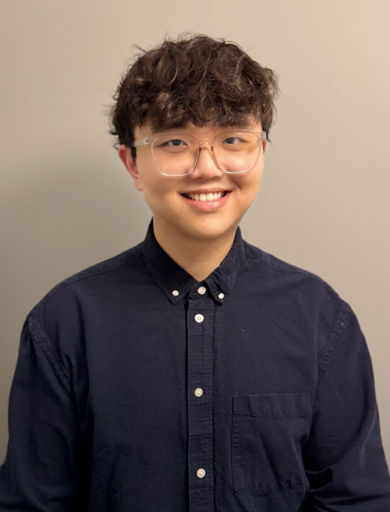

Incoming CS PhD student.
MS in Computer Science.
University of Illinois Urbana-Champaign.

I currently work on physics-guided machine learning for land-atmosphere flux modeling at UIUC's Institute for Sustainability, Energy, and Environment, advised by Prof. Kaiyu Guan and Prof. Sheng Wang. My research combines deep neural networks with biophysical process constraints to predict carbon and water fluxes across European and global ecosystems at continental scale. In my PhD, I plan to move toward Digital Twin research.
CV · LinkedIn · Google Scholar · ruizhou3@illinois.edu